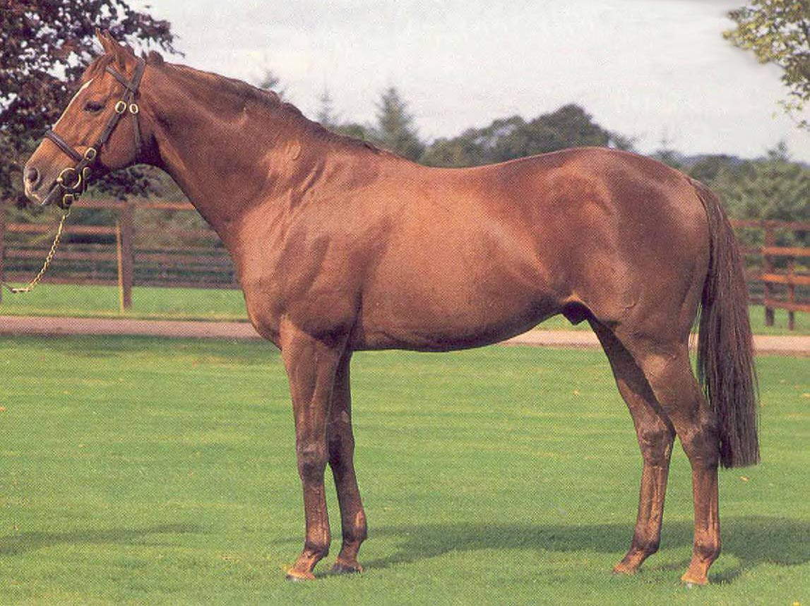

A New Influence 
In recent years, two standouts in American racing – Azeri and Leroidesanimaux - have been produced from his daughters. In the not-too-distant past, his son Indian Ridge has given us two Breeders’ Cup winners in Ridgewood Pearl and Domedriver, and his daughter, Native Roots (Ire), produced 2004 Breeders' Cup Juvenile (G1) winner Wilko. Yet very few American breeders can tell you much about Ahonoora. And it’s no wonder.
Take a peek at the ‘grey pages’ in an old edition of The Blood Horse stallion register under “Herod” and you will find that the sire line pretty well dried up and died when Crozier’s best son Precisionist turned out to be sterile. Look under ‘sire of sires’ in a 2005 Blood Horse stallion register and the thing has Indian Ridge so confused he is listed twice, once as “Indian Ridge” and once as “Indian Ridge (IRE)”. All the horses listed are by the same horse – Indian Ridge (IRE), by the way.
Looking for a son of Ahonoora? Look in Europe. Looking for his name in the cross-reference file? Ditto – at least until the 2006 stallion book came out and Leroidesanimaux’s lineage appeared.
Background
Foaled in 1975, Ahonoora was ruled in large part by his dam’s quick tail-female line as both a runner and a progenitor. His sire, Lorenzaccio, was Herod in tail-male, and a Simon's Shoes descendent who was one of only two horses ever to lower the colors of the mighty Triple Crown winner Nijinsky II.
Ahonoora was bred by Wyld Court Stud in Great Britain and sold for 7600 Guineas to Sheikh Essa Alkhalifa. Though his sire, inbred to Reine-de-Course Friar’s Daughter via Fille D’amour and Bahram, had been banished to Australia as a sire of plodders, Ahonoora was about to prove that given the right mate, Lorenzaccio might well have done all right.
In addition to his sire’s inbreeding, Ahonoora was overall inbred to Marchetta via Sweet Lavender and Rose Red and also carried balanced doubles of Colorado and Manna.
His dam, Helen Nichols, was 4 x 4 to the speed influence Fair Trial, and her dam, Quaker Girl, was inbred to half sisters Serpentine and Glare (out of Footlight). Then Footlight’s half sister Illuminata also appears (for a total of Paraffin x3). A similar pattern of inbreeding in the dam appears in the pedigree of Ahonoora’s most successful son at stud, Indian Ridge.
Described as a rangy chestnut in Tony Morris’ excellent 1990 book Thoroughbred Stallions, Ahonoora hit the board in 13 of his 20 starts. He won the G2 Nunthorpe (Sweep) Stakes; the G3 King George Stakes; and the G2 York Sprint Championship Stakes. He placed in the G1 King’s Stand, and the G2 Temple and (Vernons) Spring Cup as well.
Gone Too Soon
Ahonoora’s racing success afforded him a chance at stud. His offspring, while not carrying the cache of the Northern Dancer line, were tough and good-looking. Further, they could run, and the chestnut achieved enough success at stud early to be the most expensive stallion at the Irish National Stud.
Likely better off had he been left in Ireland, Ahonoora fell victim to the usual greed and money won the day. Offers from around the globe were tendered to lure him away from his homeland, and he ended up a dual hemisphere sire. Whether or not all the shipping about had anything to do with his early demise is debatable, but he broke his near hind leg while at stud in Australia and was destroyed. He was only 14 at the time and his place at the head of the Herod tribe made his early loss immeasurable by monetary worth alone.
The Color of Success
Intriguingly, since his sire was a contemporary of Nijinsky II, Morris’ book tells us that Ahonoora’s chestnut offspring were often rejected as lesser members of his tribe. This was said, too, of the chestnut Nijinsky II get as sires (though Sky Classic has put paid to that nonsense to some degree).
Chance took over with Ahonoora and the chestnut prejudice, however. His best son, and the one who is carrying on the sire line, Indian Ridge, is a chestnut. But, as Morris pointed out, he could have been no other color with two chestnut parents.
Nevertheless, it is intriguing that Indian Ridge’s Breeder’s Cup Mile winner Domedriver is a bay, as are champions Definite Article and Namid. His top chestnuts include Ridgewood Pearl, Irish 2000 Guineas winner Indian Haven, and champion sprinter Compton Place. And of course, his grandchildren Azeri and Leroidesanimaux are both chestnuts as well.
Sire Record/Honors
Leading sire in Ireland, 1987
Among leading sires in Ireland, 1992
Second leading sire in England, 1986
Second leading sire in England, 1992
Fifth Leading sire in England, 1987
Best Direct Progeny of Ahonoora:
Dr. Devious, 1989 c. out of Rose of Jericho by Alleged.
Epsom Derby, Dewhurst S., G1. Champion at 3, 11-14 f. At stud in Italy.
Don’t Forget Me, 1984 c. out of African Doll by African Sky.
English & Irish 2000 Guineas. Champion Miler in Ireland. At stud in India.
Park Appeal, 1982 f. out of Balidaress by Balidar.
Moyglare Stud and Cheveley Park S., G1. Champion at two. In England and Ireland.
Park Express, 1983 f. out of Matcher by *Match II.
Phoenix Champion S., G1, etc. Champion at two and three in England.
Indian Ridge, 1985 c. out of Hillbrow by Swing Easy.
Royal Ascot S., G2, King’s Stand S. Among leading sires in Ireland.
Noora Abu, 1982 f. out of Ishtar Abu by St. Chad.
Highweight older mare at 7 on Irish Free H. 9 ½-11 f., Pretty Polly S., G2.
Ruby Tiger, 1987 f. out of Hayati by Hotfoot.
E. P. Taylor S., G2. Champion older mare in England at four, five and six from 9 ½ to 11 furlongs. Champion also in Ireland, Italy and Germany.
Negligent, 1987 f. out of Negligence by Roan Rocket.
Champion at two in England. 3rd One Thousand Guineas.
Topanoora, 1987 c. out of Topping Girl by Sea Hawk II.
Highweight Older Horse at 4 on Irish Free H. 11-14 f.
Inchinor, 1990-2003 out of Inchmurrin by Lomond. 2nd G1 Dewhurst, 3rd G1 Sussex. Sire.
Statoblest, 1986 c. out of Statira by Skymaster. Palace House S., G3. Keeneland
Ninthorpe S., G1, etc. At stud in Australia.
Carrying On
Today, the best chance of carrying on the Herod male line via Ahonoora is firmly in the grasp of Indian Ridge. He is doing his job well. To date, he has sired seven champions and 26 graded stakes winners, 43 stakes winners overall (9%).
Out of the winner Hillbrow by Swing Easy, Indian Ridge is inbred 3 x 3 to half siblings Martial and Skymaster (out of Discipliner). Martial won the 2000 Guineas and Coventry Stakes, Skymaster won the Middle Park and Windsor Castle Stakes.
Discipliner herself carries some interesting inbreeding. Her second dam, Louise by Finglas, is inbred to the tail-female line tracing to Fascination (Coronation Stakes). This appears via a 5 x 4 cross of half siblings Farman and Picardel in the pedigree of Discipliner. Coronation’s dam was the Yorkshire Oaks winner Charm (1888 by St. Simon).
Indian Ridge, still at stud as of this writing has, as previously mentioned, two Breeders’ Cup Mile winners to his credit, Domedriver and Ridgewood Pearl. Domedriver is already at stud in Great Britain and his first foals will be yearlings of 2006. Domedriver descends from the Herd Girl branch of Reine-de-Course Torpenhow. This is the family of Nijinsky II, The Minstrel, El Gran Senor, Malinowski, Spinning World, and Aldeberan to mention only a few.
Indian Ridge also has several other sons at stud: Compton Place, a champion sprinter at three who is off to a quick start at stud; the aforementioned bay Definite Article, a G1 winner whose best get include the top router Vinnie Roe and U. S. graded stakes runner Grammarian; the handsome Indian Haven who won the Irish 2000 Guineas and has yearlings of 2006 and G1-winning sprinter Namid who has gotten a lot of winners so far but the quality needs to catch up to the quantity.
Ridgewood Pearl, by the way, has not followed her success at the races with a good producing career. To date, she has not gotten any stakes winners. Her best offspring as of this writing is her first, the Rainbow Quest colt Quest For A Star who won on the flat and over jumps. Her last listed foal was a 2002 colt, also by Rainbow Quest, named Percy’s Pearl.
As A Broodmare Sire
As a broodmare sire, both Ahonoora and Indian Ridge have respectable numbers. Ahonoora’s daughters have produced 68 stakes winners, 34 of them graded. We already know Azeri and Leroidesanimaux. Here are some others.
Gabr, a son of Green Desert who won the Group 2 Sandown Mile, Malhub, a Kingmambo colt who won the G1 Golden Jubilee Stakes at Ascot, The Tatling by Perugino who won the Group 1 King’s Stand and was stout enough to last 59 starts. Then there is Hurricane Alan, a double Group 2 winner by Mukaddamah, Fallow (by Common Grounds), a Group 3 winner who placed in several Group 2 events in England, and Shalford by Thatching, winner of the Diadem (Group 3) at Ascot. Then there is champion The Puzzler by Sharpo and champion Desert Lady by Danehill.
At stud out of Ahonoora mares are G2 winner Acclamation and the highly successful Cape Cross (out of champion Park Appeal), sire of the grand mare Ouija Board, who got 10 stakes winners in his first crop. Then there is the young Diktat, a champion sprinter whose second dam is by Ahonoora that is off to a good start and finally Shinko Forest, by Green Desert out of Ahonoora’s champion Park Express. He is just getting started at stud.
Also just getting started is the young Mr. Greeley horse Reel Buddy who is out of an Indian Ridge mare. He has yearlings in 2006.
Likes And Dislikes
Before you decide that this article does not apply to American breeders since Ahonoora is a “grass” horse, we suggest you remember Azeri, Leroidesanimaux, Ouija Board, Domedriver and Ridgewood Pearl. There is no reason in the world to think that an offspring of Indian Ridge (or one of his sons) or an Ahonoora mare cannot fit here. In fact, we are in dire need of bloodlines just like this.
Here’s a look at some of the basic inbreeding in the best of the Ahonoora tribe:
Don’t Forget Me – Adds Tudor Minstrel to Fair Trial x2, balances Sir Cosmo, doubles Portlaw, adds another Fairway line via Blue Peter. Also affects a cross of full sisters Durban and Sheba via Tourbillon and Sing Sing (x2 Frizette).
Dr. Devious – Linebred to Herod via four Tourbillon lines – Djebel x2, Triomphe and Tornado. He was also inbred to Prince Rose via his dam (two males) and War Admiral (two females). A Ballantrae treble is present via Coeur A Coeur x2/Balancoire II. His dam carries several Selene lines via Hyperion x2/*Sickle and this blends nicely with Ahonoora’s Big Game blood. Selene’s dam, Serenissima, is a half sister to Dolabella, second dam of Big Game.
Park Appeal – Fascinating x3 to Friar’s Daughter via Fille D’Amour x2/Bahram. More Fair Trial is also added via the mare Innocence and meets his half sister Sansonnet in Tudor Minstrel for a x4 cross of Lady Juror. There is a nice background of Pharos/Fairway plus a line of their three-quarter sister Pladda via *Herbager.
Park Express – Added Pharos x2 via Nearco to the existing Fairway lines. The Match II line also adds another Tourbillon cross via Le Volcan.
Indian Ridge – Explained above. But he also balanced Bull Lea (Hill Gail/Delta Queen) and added a *Nasrullah/Nearco double via Noor and Grey Sovereign to go with the existing Fairway blood.
Noora Abu – Adds another line of Friar’s Daughter via Big Game. She also brings in a couple of Hyperion lines to extend the Myrobella linebreeding. Finally, she offers a rare balanced double of Kircubbin (Grand Prix de Saint-Cloud, Irish St. Leger, etc.) via his son, Chef-de-Race Chateau Bouscaut, winner of the French Derby and the mare Riberac, her fifth dam.
Ruby Tiger – Is bred on the same Ahonoora/Skymaster cross as Indian Ridge, thus creating a double of Discipliner (see “Carrying On”) Her dam also adds an extra Djebel cross and one of Court Martial plus another Fair Trial line, thus extending inbreeding to Frizette and Fairway. Finally, she adds another line of Rose Red via Godetia to the Borealis line in Ahonoora, thus doubling this great mare.
As a broodmare sire, we find much of the same – especially a liking for more Fairway blood. Lady Juror is also a popular inbreeding tool, especially via Tudor Minstrel/Fair Trial. One of the more recent horses bred along these lines is Malhub, who has Fair Trial/Riot from his *Forli cross added to the Fair Trial double in his dam.
Overall, there is also a fair amount of inbreeding to Friar’s Daughter and Bull Lea shows up often enough to note. Further, Frizette inbreeding, especially via Tourbillon, is quite common.
Then there is Shalford, who is x3 Simon’s Shoes. But he is not alone, as the aforementioned Malhub is inbred to this great mare thanks to his Nureyev line.
Taking note of these inbreeding trends and applying them to Azeri, for instance, shows us that her paternal grandsire, Mr. Prospector, is a Frizette relation and her Match II line, which appears via his second dam, also carries a Tourbillon cross. Her sire brings in more Fairway blood via Court Martial and her Hyperion and *Sickle lines of course add more Myrobella to Big Game.
Leroidesanimaux has the Tourbillon, Lady Juror and Fairway linebreeding, and his dam doubles Chateau Bouscaut. He also picks up extra Pharos via *Nasrullah to go with the Fairway lines.
Coming Full Circle
In the beginning of the breed, there were three major sire lines – Eclipse, which is now the tail-male line for most of the breed; Matchem (the Man o’ War line held up these days via sons of Valid Appeal and Relaunch) and then there is Herod. In America, except for a possible handful of regional sires (which are not even listed in the ‘big book’) the line is all but dead.
There are two main reasons for this: *Ambiorix did not breed on and Crozier/My Babu died out with Precisionist’s sterility. We had a nice Luthier horse, Sagace, but he died after two years. His son, Gold Saga, went to stud in Washington, but one can imagine the reception he got.
Horses by the Herod-line Luthier were so gorgeous we often found ourselves running down to the paddock to simply have a look. Leroidesanimaux gives us that same chill down our backs. These are horses of a different type, perhaps throwbacks to another, better time.
At some point, a major breeder who has the ear of those in power is going to wake up and smell the coffee, realizing that he (and just about everybody else) has bred himself into a Native Dancer corner. When that happens, horses like Ahonoora’s tribe are going to start looking very attractive indeed, especially because many of them are totally devoid of any Mr. Prospector blood and have only one Northern Dancer cross.
Then, perhaps, we will again find some balance. We will perhaps return to the beginning and the three great sire lines. If and when that happens, one can be certain that Ahonoora will be leading the Herod pack. For the time being, we shall have to be content with broodmare kin like Leroidesanimaux. Given how much he looks like Ahonoora, that’s not such a bad compromise.

Ellen Parker's Ahonoora story originally appeared in Pedlines #114, December 2005
and has been updated for the website